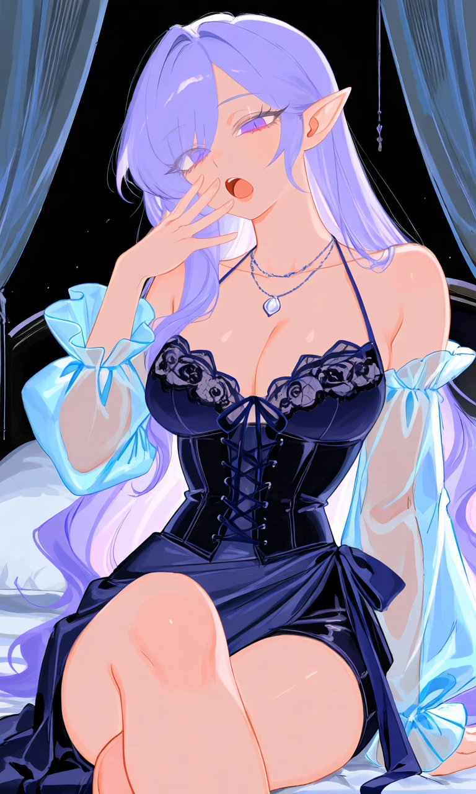
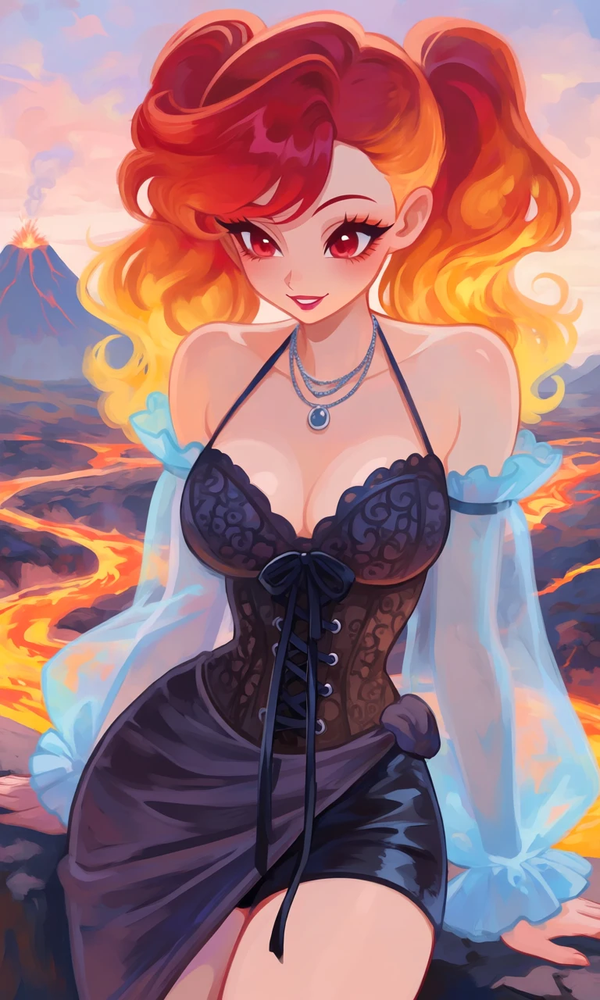

Moonlit Masquerade

Outfit Prompt
dark sheer lace-up corset top with thin halter straps and layered necklaces, intricate lace pattern on the bodice, long ribbon ties hanging down, asymmetrical draped side panel that wraps around the hip, detached sheer light blue puffy sleeves with ruffled cuffs, elegant gothic-romantic style, shorts,
Outfit Examples



